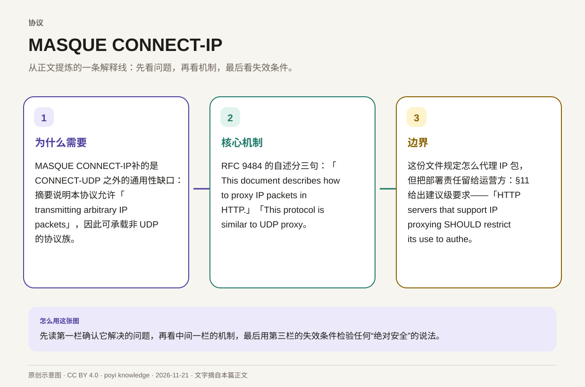
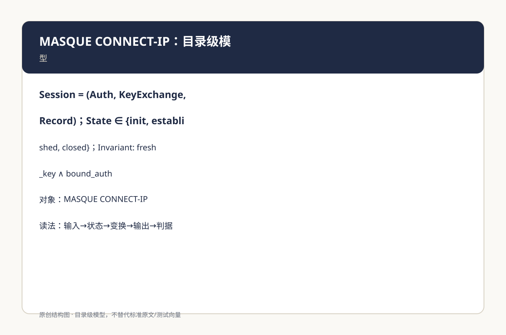

原理与机制
协议：MASQUE CONNECT-IP（MASQUE Proxying IP over HTTP）。RFC 9484 的自述分三句：「This document describes how to proxy IP packets in HTTP.」「This protocol is similar to UDP proxying in HTTP but allows transmitting arbitrary IP packets.」以及「More specifically, this document defines a protocol that allows an HTTP client to create an IP tunnel through an HTTP server that acts as an IP proxy.」——粒度从数据报升到 IP 包。

为什么重要
它补的是 CONNECT-UDP 之外的通用性缺口：摘要说明本协议允许「transmitting arbitrary IP packets」，因此可承载非 UDP 的协议族；同段还声明对基础件的更新关系——「This document updates RFC 9298.」
应用与实例
用途清单写在 §1：「This can be used for various use cases, such as remote access VPN, site-to-site VPN, secure point-to-point communication, or general-purpose packet tunnelling.」摘要说明它是把 IP 经 HTTP 服务器代理出去的协议，§1 又把它与 UDP 代理归为同族——「IP proxying operates similarly to UDP proxying [CONNECT-UDP]」。

边界与攻击面
这份文件规定怎么代理 IP 包，但把部署责任留给运营方：§11 给出建议级要求——「HTTP servers that support IP proxying SHOULD restrict its use to authenticated users」，§4.6 提供收窄请求范围的手段（客户端可把请求限制到特定 IP 前缀或协议）。也就是说放行什么不由本文件硬性规定，而由 SHOULD 级配置与范围限制共同承担。
历史与背景
页眉给出编辑者与时间：T.Pauly, Ed.（Apple Inc.），与 D.Schinazi、A.Chernyakhovsky、M.Kühlewind、M.Westerlund 同列，日期 2023 年 10 月，Category 为 Standards Track，并标「Updates: 9298」；版权行同样是 2023 年的 IETF Trust 声明。
技术参数与复算边界
该条目的形式模型是 (\mathrm{Adv}^{\Pi}_A(\lambda)\le n\cdot\mathrm{Adv}^{\mathrm{prf}}F(\lambda)+\varepsilon{\mathrm{aead}}(\lambda))。输入：输入：MASQUE CONNECT-IP的公开参数、密钥/随机数与消息；变量说明：Π 协议，A 敌手，n 会话数，PRF/AEAD 为底层原语。 预期输出：按 MASQUE CONNECT-IP 的规范执行后得到可验证的输出或可比较的优势界。 复算必须给出输入、步骤、输出和单位；示例只演示流程，不替代标准测试向量。
复杂度由密钥长度、分组/状态规模、轮数、随机数质量和敌手模型共同决定；参数越界、版本差异与实现侧信道都可能使公式结论失效。已登记限制：该条目只给出形式模型与可复算步骤，不声称已完成生产实现、侧信道认证或第三方安全评估。
逐步示例与核验
形式模型与复算步骤
[\mathrm{Adv}^{\Pi}_A(\lambda)\le n\cdot\mathrm{Adv}^{\mathrm{prf}}F(\lambda)+\varepsilon{\mathrm{aead}}(\lambda)]
MASQUE CONNECT-IP的公开参数、密钥/随机数与消息；变量说明：Π 协议，A 敌手，n 会话数，PRF/AEAD 为底层原语。1.把协议消息序列写成状态机。2.用混合论证逐个替换原语。3.把剩余优势归约到 PRF/AEAD 安全。边界：公式只覆盖已登记的参数与假设；参数取值、标准版本和实现细节仍以来源为准。
参考出处
- Wikipedia search entry for MASQUE CONNECT-IP. https://zh.wikipedia.org/w/index.php?search=MASQUE%20CONNECT-IP
- Handbook of Applied Cryptography (Menezes, van Oorschot, Vanstone). https://www.cacr.math.uwaterloo.ca/hac/
- RFC 9484: Proxying IP in HTTP. https://www.rfc-editor.org/rfc/rfc9484